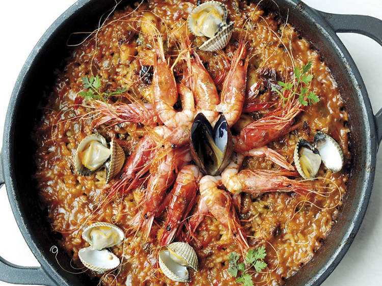

Paella de Barcelona

These recipes have been adapted from Marimar Torres' book
'The Catalan Country Kitchen'.
- 4 braised pork fore shanks (optional)
- 1/4 cup extra-virgin olive oil
- 2 Spanish chorizo sausages, thickly sliced
- 1 Spanish onion, diced
- 4 garlic cloves, crushed
- Bunch flat-leaf parsley leaves, chopped, reserve some for garnish
- 1 (15-ounce) can whole tomatoes, drained and hand-crushed
- 4 cups short grain Spanish rice
- 8 cups chicken stock, warm
- Generous pinch saffron threads, steeped in the warm chicken stock
- 2 tablespoons smoked paprika
- 12 jumbo shrimp, peeled and de-veined
- 1 cup fresh peas or sweet peas, frozen and thawed
- Heat oil in a paella pan over medium-high heat. Sauté the chorizo until they just start to give up some of their red oils, about 5 minutes.
- Add the onions, garlic, and parsley. Cook them until they become soft and just browning in the edges, about 8 to 10 minutes. Then, add tomatoes and cook until the mixture caramelizes a bit and the flavors meld.
- Fold in the rice and stir-fry to coat the grains. Pour in the stock and simmer for 10 minutes, gently moving the pan around so the rice cooks evenly and absorbs the liquid.
- Add the pork shanks in a symmetrical pattern around the pan. Cook for 5 minutes and turn over, pushing the down into the rice.
- Add the shrimp in a symmetrical pattern around the pan and gently push them into the cooking rice.
- Give the paella a good shake and let it simmer, without stirring, until the rice is al dente, for about 15 minutes. During the last 5 minutes of cooking sprinkle the peas over the rice.
- When the paella is cooked and the rice looks fluffy and moist, turn the heat up for 40 seconds until you can smell the rice toast at the bottom, then it's perfect. (note: The ideal paella has a toasted rice bottom called socarrat)
- Remove from heat and rest for 5 minutes. Garnish with parsley.